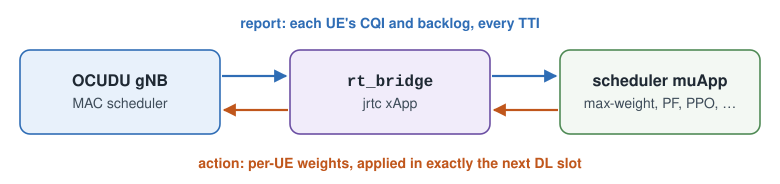
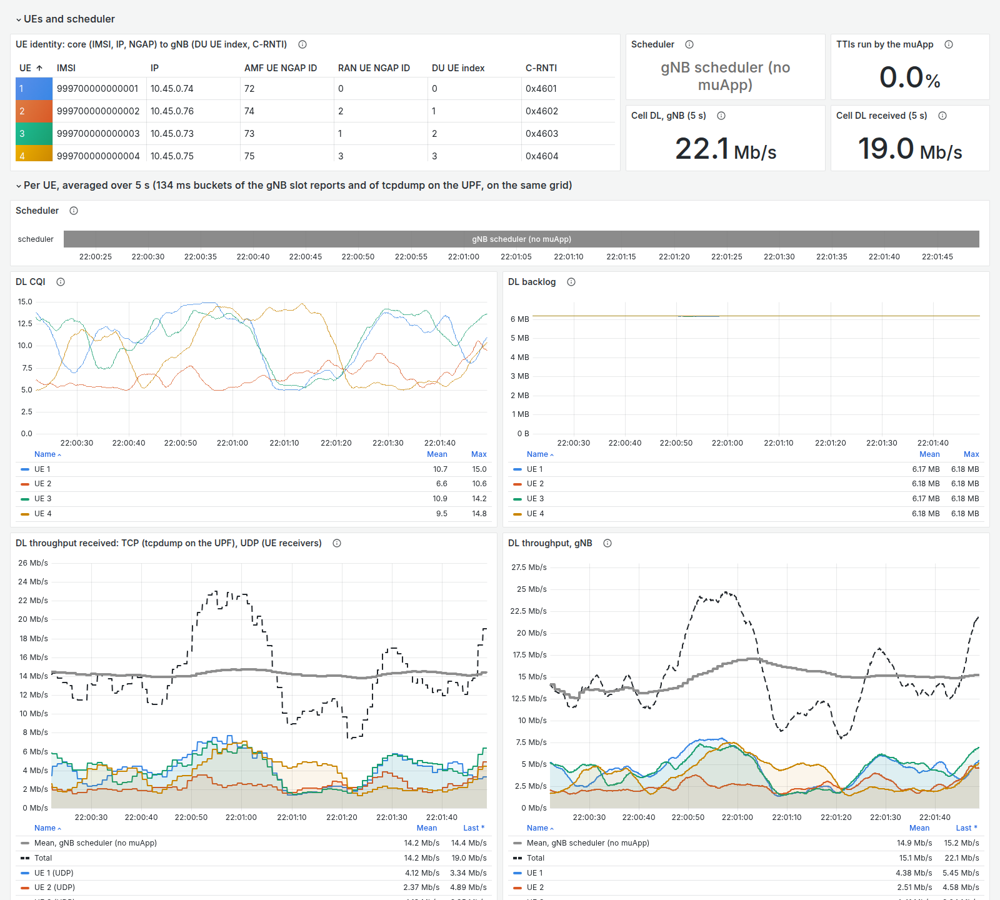
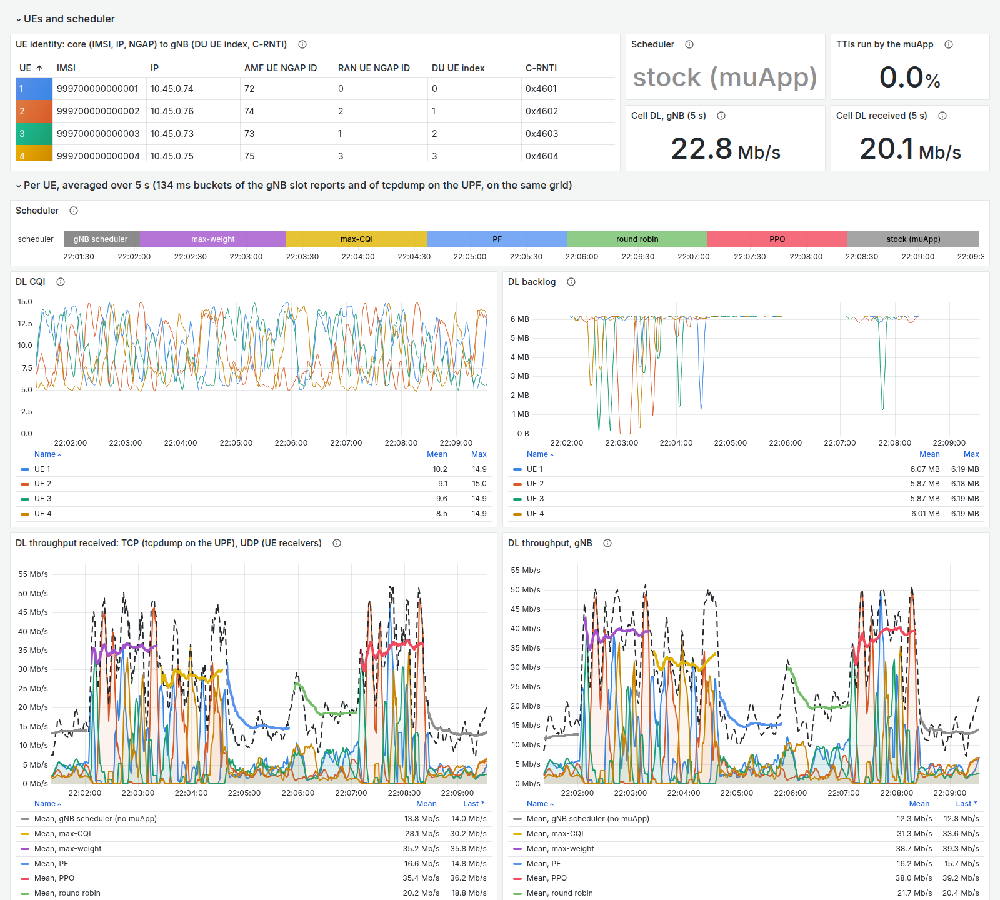
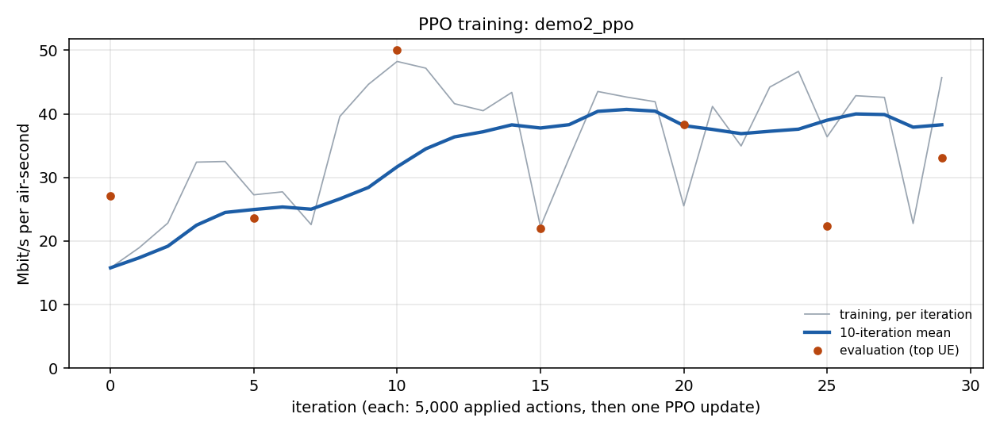
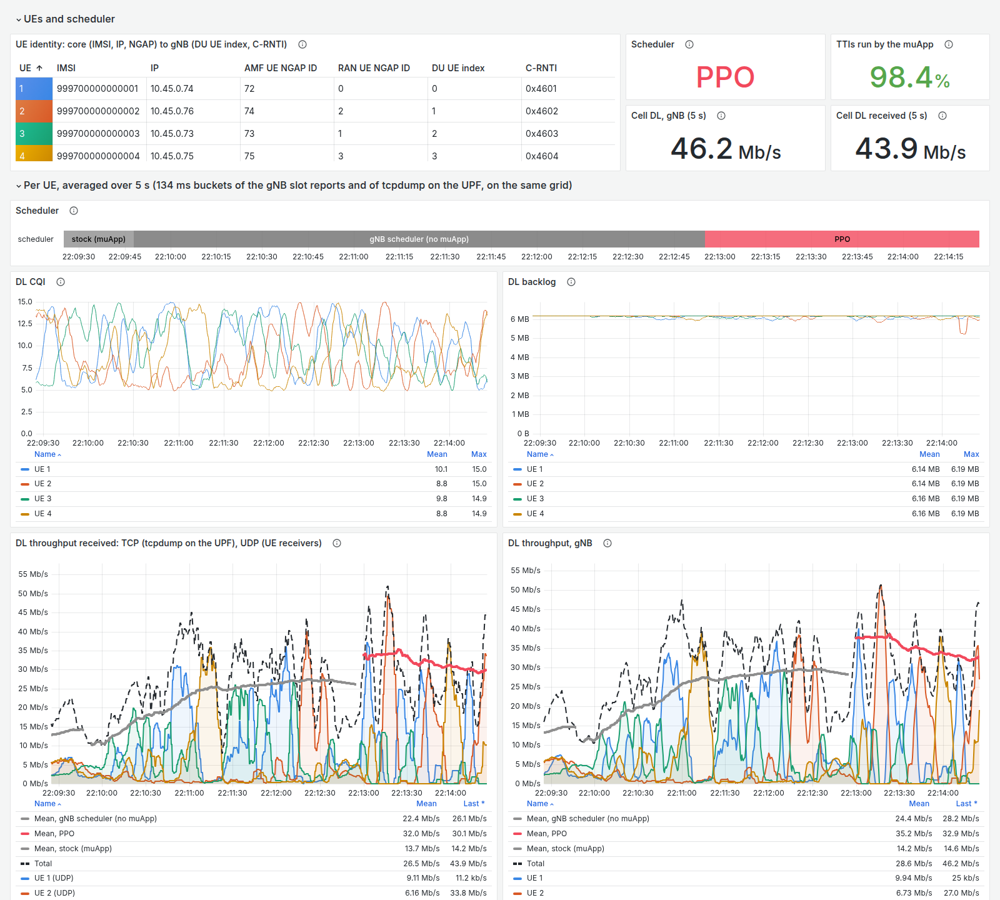

Demo 2: AI-Driven Scheduling¶
EdgeRIC-RT puts a scheduler muApp in the gNB’s loop every TTI. With four UEs, you switch schedulers while you watch Grafana, then train a PPO scheduler online.
Before you start: Parts 1 and 2 of the tutorial.
Design: EdgeRIC with OCUDU-jbpf: System Design (the hooks, jrtc and the TTI timeline) and AI-driven muApp for RAN Scheduling (the scheduling loop and the policies).
Runtime: about 20 minutes.


1. Run the System¶
Open four terminals on the testbed host.
Terminal 1: RAN¶
cd <your clone of edgeric-ocudu-jbpf>
export KUBECONFIG="$(k3d kubeconfig write janus-cluster)"
bash scripts/setup_zmq_chan_demo.sh 4 --ran --edgeric
The script stops everything still running, provisions four subscribers in the core, restarts jrtc-0
with the EdgeRIC-RT codelets and the rt_bridge xApp, starts the broker for four UEs and the gNB, and
then shows the gNB console. It takes about 2 minutes; start Terminal 2 when the console appears.
== [1/7] stop everything ==
UPF iperf3 stopped
UE iperf3 stopped
tcp_probe stopped
UE stopped (live now: 0)
gNB stopped; log truncated (was 8.0K)
broker stopped
ues stopped
broker stopped
== [2/7] core: IMSIs 999700000000001..999700000000004 ==
provisioned (0 added)
== [3/7] fresh jrtc-0 (clean app registry + jbpf IPC peer) ==
jrtc-0 ready
== [4/7] stage broker, UE and gNB configs; netns for 4 UE(s) ==
ue1: pod 10.201.1.1 <-> netns 10.201.1.2
ue2: pod 10.201.2.1 <-> netns 10.201.2.2
ue3: pod 10.201.3.1 <-> netns 10.201.3.2
ue4: pod 10.201.4.1 <-> netns 10.201.4.2
== [5/7] broker (4 UE) ==
[broker] C++ single-thread, gNB tx ipc:///tmp/zmq/gnb_tx -> 4 UE(s) -> gNB rx ipc:///tmp/zmq/gnb_rx
[broker] gNB receiver noise -65.0 dBFS
[broker] UE1: rx ipc:///tmp/zmq/ue1_rx tx ipc:///tmp/zmq/ue1_tx (DL +0.0 dB, UL +0.0 dB)
[broker] UE2: rx ipc:///tmp/zmq/ue2_rx tx ipc:///tmp/zmq/ue2_tx (DL +0.0 dB, UL +0.0 dB)
[broker] UE3: rx ipc:///tmp/zmq/ue3_rx tx ipc:///tmp/zmq/ue3_tx (DL +0.0 dB, UL +0.0 dB)
[broker] UE4: rx ipc:///tmp/zmq/ue4_rx tx ipc:///tmp/zmq/ue4_tx (DL +0.0 dB, UL +0.0 dB)
[broker] running (chunk 11520, queue 23040, pacing DL at srate)
== [6/7] gNB (broker mode, dynamic pod-IP NG-U bind) ==
gnb tx_port=ipc:///proc/52540/root/tmp/zmq/gnb_tx
gnb started (bind=10.42.0.92)
gnb procs=1 ngsetup=1
== bridge.conf: inline=off lead=1 cpu=- fifo=0 ==
== codelets -> srs-gnb-du1-0/ocudujbpf:/codelets/edgeric_rt ==
== jbpf LCM forwarder in jrtc-0 ==
fwd: fwd 127.0.0.1:30450 -> ('srs-gnb-du1-proxy.ran.svc.cluster.local', 30450)
== load /apps/edgeric_rt/rt_deployment.yaml ==
jrtc: Running Python script: /apps/edgeric_rt/rt_bridge_app.py
jrtc: Calling Python function /apps/edgeric_rt/rt_bridge_app.py...
jrtc: [rt_bridge] starting, conf={'inline': 'off', 'lead': '1', 'cpu': '', 'fifo': '0', 'stats_s': '5'}
jrtc: 2026-10-08 04:57:39 - jrtc_app - INFO - b'rt_bridge':: App initialization started
jrtc: 2026-10-08 04:57:39 - jrtc_app - INFO - b'rt_bridge':: App initialization completed successfully
jrtc: [rt_bridge] running: inline=off lead=1 run_dir=/apps/edgeric_rt/run
RAN UP. Broker for 4 UE(s); gNB connected to the AMF.
UEs : bash scripts/setup_zmq_chan_demo.sh 4 --ues [--channel FILE | --traces FILE] (another terminal)
console : bash scripts/gnb_console.sh
--== OCUDU gNB (commit ) ==--
Lower PHY in executor sequential baseband mode.
Available radio types: zmq and realtime_loopback.
Cell pci=1, bw=20 MHz, 1T1R, dl_arfcn=632628 (n78), dl_freq=3489.42 MHz, dl_ssb_arfcn=632256, ul_freq=3489.42 MHz
N2: Connection to AMF on open5gs-amf-ngap.open5gs.svc.cluster.local:38412 completed
Remote control server listening on 127.0.0.1:55555
==== gNB started ===
Type <h> to view help
Once the UEs attach (Terminal 2) and traffic flows (Terminal 3), the console prints one row per UE
every second: on the DL side the CQI, MCS, bit rate (brate), HARQ acks and the backlog (dl_bs):
|--------------------DL---------------------|-------------------------------UL-----------------------------
pci rnti | cqi ri mcs brate ok nok (%) dl_bs | pusch rsrp ri mcs brate ok nok (%) bsr ta phr
1 4601 | 7 1.0 4 1.9M 288 22 7% 6.18M | 24.7 -36.7 1 23 104k 24 3 11% 0 261n 38
1 4602 | 5 1.0 1 1.1M 466 0 0% 6.18M | 24.6 -36.7 1 22 96.3k 22 0 0% 0 260n 38
1 4603 | 15 1.0 18 4.2M 140 0 0% 6.18M | 24.4 -36.7 1 22 103k 23 0 0% 0 261n 38
1 4604 | 5 1.0 1 1.2M 484 0 0% 6.17M | 25.3 -35.7 1 25 107k 24 0 0% 0 261n 38
1 4601 | 5 1.0 1 1.2M 543 0 0% 6.18M | 24.5 -36.7 1 22 101k 23 0 0% 0 260n 38
1 4602 | 7 1.0 4 2.4M 353 15 4% 6.17M | 24.5 -36.7 1 23 112k 25 1 3% 0 261n 38
1 4603 | 15 1.0 19 4.9M 155 0 0% 6.17M | 24.7 -36.7 1 23 100k 23 0 0% 0 260n 38
1 4604 | 7 1.0 4 2.3M 303 31 9% 6.18M | 25.3 -35.8 1 25 103k 23 0 0% 0 260n 38
Ctrl-C leaves the console and the RAN keeps running; bash scripts/gnb_console.sh reopens it.
Terminal 2: UEs¶
cd <your clone of edgeric-ocudu-jbpf>
export KUBECONFIG="$(k3d kubeconfig write janus-cluster)"
bash scripts/setup_zmq_chan_demo.sh 4 --ues --traces duranta-oai-ue/ue_traces_cqi_4ue.conf
bash scripts/ue_rnti_map.sh 4
--ues starts the four UEs against Terminal 1’s broker and gNB and waits until every UE attaches,
about 20 s. Each UE then starts its CQI walk at the same instant: ue_traces_cqi_4ue.conf gives every UE
an independent walk over CQI 4–15, so the best UE keeps changing. ue_rnti_map.sh maps ue1..ue4 to
their C-RNTIs, so the muApps and the dashboard can name the UEs. The UEs join a RAN once: to restart
them, restart Terminal 1, then run --ues again.
traces from attach: ue1 cqi_walk_1 ue2 cqi_walk_2 ue3 cqi_walk_3 ue4 cqi_walk_4
== [1-6/7] the RAN of the last --ran ==
broker pid 52540 for 4 UE(s), UL noise -65; gNB up; telemetry off
== [7/7] 4 UE(s) ==
ue1: IMSI 999700000000001 chan: distance=50,speed=0,min_distance=40,max_distance=60,dl_snr_ref=30,ul_snr_ref=30,seed=1,jitter_db=0,trace_ctl=/tmp/traces/ue1.ctl,ul_noise_dbfs=-65
ue2: IMSI 999700000000002 chan: distance=50,speed=0,min_distance=40,max_distance=60,dl_snr_ref=30,ul_snr_ref=30,seed=2,jitter_db=0,trace_ctl=/tmp/traces/ue2.ctl,ul_noise_dbfs=-65
ue3: IMSI 999700000000003 chan: distance=50,speed=0,min_distance=40,max_distance=60,dl_snr_ref=30,ul_snr_ref=30,seed=3,jitter_db=0,trace_ctl=/tmp/traces/ue3.ctl,ul_noise_dbfs=-65
ue4: IMSI 999700000000004 chan: distance=50,speed=0,min_distance=40,max_distance=60,dl_snr_ref=30,ul_snr_ref=30,seed=4,jitter_db=0,trace_ctl=/tmp/traces/ue4.ctl,ul_noise_dbfs=-65
tune: gnb + broker threads SCHED_FIFO; gnb, broker, UEs on CPUs 16-31,48-63
################ verify ################
ue1 ip=10.45.0.74 t 6.0 s, d 50.0 m, DL SNR 30.0 dB (ref -27.3 dBFS), UL SNR 30.0 dB, UL gain 8.4 dB
ue2 ip=10.45.0.76 t 6.0 s, d 50.0 m, DL SNR 30.0 dB (ref -27.3 dBFS), UL SNR 30.0 dB, UL gain 8.4 dB
ue3 ip=10.45.0.73 t 6.0 s, d 50.0 m, DL SNR 30.0 dB (ref -27.3 dBFS), UL SNR 30.0 dB, UL gain 8.4 dB
ue4 ip=10.45.0.75 t 6.0 s, d 50.0 m, DL SNR 30.0 dB (ref -27.3 dBFS), UL SNR 30.0 dB, UL gain 9.4 dB
== traces: duranta-oai-ue/ue_traces_cqi_4ue.conf ==
copied cqi_walk_1.csv
copied cqi_walk_2.csv
copied cqi_walk_3.csv
copied cqi_walk_4.csv
ue1 -> cqi_walk_1
ue2 -> cqi_walk_2
ue3 -> cqi_walk_3
ue4 -> cqi_walk_4
at t 7.0 s: ue1, ue2, ue3, ue4 switch at t 10.0 s
ue1: trace cqi_walk_1 (3000 rows, looping) from t 10.0 s (set at t 8.0 s)
ue2: trace cqi_walk_2 (3000 rows, looping) from t 10.0 s (set at t 8.0 s)
ue3: trace cqi_walk_3 (3000 rows, looping) from t 10.0 s (set at t 8.0 s)
ue4: trace cqi_walk_4 (3000 rows, looping) from t 10.0 s (set at t 7.9 s)
now:
ue1: t 11.0 s, trace cqi_walk_1 row 9 (T 10.0 s), DL SNR 4.0 dB (ref -27.3 dBFS), UL SNR 20.0 dB, UL gain -1.6 dB
ue2: t 11.0 s, trace cqi_walk_2 row 9 (T 10.0 s), DL SNR 10.5 dB (ref -27.3 dBFS), UL SNR 20.0 dB, UL gain -1.6 dB
ue3: t 11.0 s, trace cqi_walk_3 row 9 (T 10.0 s), DL SNR 1.4 dB (ref -27.3 dBFS), UL SNR 20.0 dB, UL gain -1.6 dB
ue4: t 11.0 s, trace cqi_walk_4 row 9 (T 10.0 s), DL SNR 2.0 dB (ref -27.3 dBFS), UL SNR 20.0 dB, UL gain -0.6 dB
SETUP DONE. 4 UE(s) attached.
traffic : bash scripts/traffic_nue.sh start (DL iperf3, UPF -> every UE)
rates : bash scripts/traffic_nue.sh status (per-UE + total, measured at the UE)
channel : kubectl exec -n ran srs-gnb-du1-0 -c durue1 -- grep 'ZMQ chan' /tmp/ues/ue1.log | tail
traces : bash scripts/trace_ctl.sh status | set <ues> <trace> | stop <ues> | list
stop : bash scripts/traffic_nue.sh stop && bash scripts/stop_demo.sh
ue1 0x4601
ue2 0x4602
ue3 0x4603
ue4 0x4604
wrote <your clone of edgeric-ocudu-jbpf>/jrtc-apps/jrtc_apps/edgeric_rt/run/ue_map.txt
Terminal 3: Traffic¶
cd <your clone of edgeric-ocudu-jbpf>
export KUBECONFIG="$(k3d kubeconfig write janus-cluster)"
bash scripts/traffic_nue.sh start --udp 100M
watch -n 2 bash scripts/traffic_nue.sh status
ue1: DL started UPF -> 10.45.0.74:5201 (udp 100M, 3600s)
ue2: DL started UPF -> 10.45.0.76:5202 (udp 100M, 3600s)
ue3: DL started UPF -> 10.45.0.73:5203 (udp 100M, 3600s)
ue4: DL started UPF -> 10.45.0.75:5204 (udp 100M, 3600s)
Give TCP ~10 s to ramp, then: bash scripts/traffic_nue.sh status
ue1 1.9 Mbit/s loss 98.1% (mean of last 10 s at the UE)
ue2 4.3 Mbit/s loss 95.7% (mean of last 10 s at the UE)
ue3 4.7 Mbit/s loss 95.2% (mean of last 10 s at the UE)
ue4 2.4 Mbit/s loss 97.6% (mean of last 10 s at the UE)
total 13.3 Mbit/s
Terminal 4: Grafana¶
cd <your clone of edgeric-ocudu-jbpf>
export KUBECONFIG="$(k3d kubeconfig write janus-cluster)"
bash scripts/dashboard_realtime_scheduling.sh load
== codelet -> srs-gnb-du1-0/ocudujbpf:/codelets/dashboard_realtime_scheduling ==
== jbpf LCM forwarder in jrtc-0 ==
fwd30450.py already running
== load /apps/dashboard_realtime_scheduling/deployment.yaml ==
gnb: 2026-10-08T05:00:19.487221Z [JBPF][CORE][INFO]: Codelet created and loaded successfully: rts_stats
jrtc: [rts] writing to http://victoria-metrics.ran.svc.cluster.local:8428/write; UE names from /apps/edgeric_rt/run/ue_map.txt; core events on udp 127.0.0.1:30503
jrtc: [rts] /apps/edgeric_rt/run/ue_map.txt: 4 UEs
== UE names ==
ue1 0x4601
ue2 0x4602
ue3 0x4603
ue4 0x4604
wrote <your clone of edgeric-ocudu-jbpf>/jrtc-apps/jrtc_apps/edgeric_rt/run/ue_map.txt
UE 1 IMSI 999700000000001 IP 10.45.0.74 RAN_UE_NGAP_ID 0 AMF_UE_NGAP_ID 72
UE 2 IMSI 999700000000002 IP 10.45.0.76 RAN_UE_NGAP_ID 2 AMF_UE_NGAP_ID 74
UE 3 IMSI 999700000000003 IP 10.45.0.73 RAN_UE_NGAP_ID 1 AMF_UE_NGAP_ID 73
UE 4 IMSI 999700000000004 IP 10.45.0.75 RAN_UE_NGAP_ID 3 AMF_UE_NGAP_ID 75
-> 4 core events to the dashboard xApps (jrtc-0, udp 127.0.0.1:30502 dashboard, :30503 dashboard-realtime-scheduling)
== Grafana ==
grafana-upt-dashboard/rt-scheduling-dashboard.json updated (Grafana picks it up within 1-2 min)
== tcp_probe (TCP, tcpdump on the UPF) and ue_rx_probe (UDP, the UE receivers' logs) ==
tcp_probe started (--map 10.45.0.74=1,10.45.0.76=2,10.45.0.73=3,10.45.0.75=4): [tcp_probe] capturing on open5gs-upf-59bcf7bbb8-v7djt:ogstun
ue_rx_probe already running (434770)
Dashboard: http://localhost:30490/d/rt-scheduling
load puts the rts_stats codelet on the mac_sched_slot_report hook and its xApp in jrtc-0, names
the UEs from the core down to their C-RNTIs, and starts the probes that measure what the UEs receive.
Open http://localhost:30490/d/rt-scheduling (“EdgeRIC real-time scheduling”). From a laptop, forward
the port first: ssh -N -L 30490:localhost:30490 <user>@<testbed-host>.


The dashboard before any muApp runs.¶
Top row: each UE from the core (IMSI, IP) down to the gNB (C-RNTI), the scheduler in charge, the share of TTIs a muApp ran, and the cell’s DL throughput at the gNB and as received.
Per UE: the CQI walks, the DL backlog (full at 6.2 MB), and the DL throughput, received and at the gNB. The thick gray line is the mean under the gNB’s own scheduler.
2. Scheduling muApps¶
Terminal 5: Scheduler muApp¶
Open a fifth terminal, and keep Terminal 2 free for channel changes
(Demo 1’s trace_ctl.sh). The muApp runs in pod edgeric-0: start
a scheduler, follow its log, then switch it live while you watch Grafana.
cd <your clone of edgeric-ocudu-jbpf>
export KUBECONFIG="$(k3d kubeconfig write janus-cluster)"
bash scripts/edgeric_muapp.sh start sched --scheduler maxweight --tag demo2-sched
bash scripts/edgeric_muapp.sh logs sched # Ctrl-C stops following; the muApp keeps running
started sched (pid 15979)
[sched] maxweight | alloc single | lead 1 | strict | hold 0 | min-share 0.02 | reports from /apps/edgeric_rt/run/muapp.sock | run demo2-sched
[sched maxweight] tti=379461 | 29.1 Mbps (ue1 1.0 ue2 1.1 ue3 27.0 ue4 0.0) | DL HIT 99.7% of 7000 | report->action p50 122 p99 213 us | slack p1 56 us | RB use 1.05 | lazy-RIC 41 lost 9
[sched maxweight] tti=389461 | 40.4 Mbps (ue1 0.0 ue2 36.9 ue3 3.5 ue4 0.0) | DL HIT 99.9% of 7000 | report->action p50 114 p99 182 us | slack p1 75 us | RB use 1.02 | lazy-RIC 46 lost 9
[sched maxweight] tti=399462 | 43.4 Mbps (ue1 0.0 ue2 43.3 ue3 0.0 ue4 0.0) | DL HIT 99.8% of 7001 | report->action p50 116 p99 214 us | slack p1 70 us | RB use 1.05 | lazy-RIC 56 lost 10
[sched maxweight] tti=409461 | 28.7 Mbps (ue1 0.0 ue2 23.8 ue3 1.5 ue4 3.4) | DL HIT 99.8% of 6999 | report->action p50 118 p99 219 us | slack p1 63 us | RB use 1.03 | lazy-RIC 70 lost 10
Every 5 s (10,000 TTIs) the muApp logs:
the cell’s DL throughput, total and per UE;
DL HIT: the share of DL slots that applied its action in exactly the TTI the action targeted;
the report-to-action latency, p50 and p99;
lazy-RIC: reports that arrived while it was still deciding. It read them but acted only on the newest.
Max-weight gives each slot to the UE with the largest CQI × backlog, so the per-UE split swings from one log line to the next as the CQI walks move.
Press Ctrl-C to leave the log (the muApp keeps running), then switch schedulers live, a minute or so apart:
bash scripts/edgeric_muapp.sh ctl "scheduler maxcqi"
bash scripts/edgeric_muapp.sh ctl "scheduler pf"
bash scripts/edgeric_muapp.sh ctl "scheduler rr"
bash scripts/edgeric_muapp.sh ctl "scheduler rl models/ppo_walk4/last.npz"
bash scripts/edgeric_muapp.sh ctl "scheduler stock"
Each ctl answers at once, and the switch takes effect at the next report:
ok at RANtime 515487: maxcqi | alloc single | lead 1 | strict | hold 0 | min-share 0.02 | sent 154790 lazy-RIC 182 lost 300
The muApp’s log marks every switch. rl models/ppo_walk4/last.npz runs a PPO policy trained on these
same CQI walks, shipped in edgeric-rt/models/. Its decisions take about twice as long as the classic
schedulers’, so a few more DL slots miss their TTI. stock sends no actions, so the gNB’s own scheduler
runs every slot (DL HIT 0 %):
[sched] switched at RANtime 515487: maxcqi | alloc single | lead 1 | strict | hold 0 | min-share 0.02
[sched rl models/ppo_walk4/last.npz (cat/set, argmax)] tti=978979 | 29.5 Mbps (ue1 0.4 ue2 0.3 ue3 28.7 ue4 0.1) | DL HIT 97.6% of 7000 | report->action p50 251 p99 440 us | slack p1 14 us | RB use 1.05 | lazy-RIC 694 lost 2797
[sched stock] tti=1128929 | 14.0 Mbps (ue1 4.5 ue2 2.7 ue3 4.2 ue4 2.6) | DL HIT 0.0% of 7000 | report->action p50 nan p99 nan us | slack p1 nan us | RB use 1.03 | lazy-RIC 1055 lost 3993


Six schedulers, 75 s each, after the gNB’s own scheduler (gray, left).¶
Strip: which scheduler was in charge.
Thick lines: each scheduler’s mean throughput. Received in this run: max-weight 35 Mbit/s, PPO 35, max-CQI 28, round robin 20, proportional fair 17, and the gNB’s own scheduler 14.
Each scheduler saw a different stretch of the CQI walks, so for a controlled comparison use
edgeric_eval.sh. It is in the Reference, with the schedulers and the options of
start sched.
3. Training the RL Policy¶
Terminal 6: Training¶
Open a sixth terminal. PPO learns which UE should get each slot, online against the live gNB. The bridge feeds one muApp at a time, so stop the scheduler first.
cd <your clone of edgeric-ocudu-jbpf>
export KUBECONFIG="$(k3d kubeconfig write janus-cluster)"
bash scripts/edgeric_muapp.sh stop sched
bash scripts/edgeric_muapp.sh start train --ues 4 --iters 30 --tag demo2_ppo
bash scripts/edgeric_muapp.sh logs train
stopped sched
started train (pid 16174)
[train] demo2_ppo: 4 UEs, action single, arch set, 30 iterations x 5000 applied TTIs, lead 1, strict
[train] it 0 | train 15.8 Mbps (HIT 97.6%) | best 25.0% eff 0.442 | eval 27.2 Mbps best 100.0% | reward 0.239 | p_top 0.35 | kl 0.0197 | collect 4.0s update 0.9s
[train] it 1 | train 19.0 Mbps (HIT 97.1%) | best 33.6% eff 0.584 | eval nan Mbps best nan% | reward 0.286 | p_top 0.41 | kl 0.0143 | collect 3.8s update 0.9s
[train] it 2 | train 22.8 Mbps (HIT 98.7%) | best 43.7% eff 0.793 | eval nan Mbps best nan% | reward 0.342 | p_top 0.37 | kl 0.0084 | collect 3.7s update 0.9s
...
[train] it 9 | train 44.6 Mbps (HIT 95.6%) | best 97.5% eff 0.992 | eval nan Mbps best nan% | reward 0.690 | p_top 0.90 | kl 0.0009 | collect 3.8s update 0.9s
[train] it 10 | train 48.2 Mbps (HIT 99.0%) | best 97.6% eff 0.996 | eval 50.0 Mbps best 100.0% | reward 0.723 | p_top 0.65 | kl 0.0001 | collect 3.7s update 0.9s
...
[train] it 29 | train 45.7 Mbps (HIT 99.4%) | best 99.5% eff 0.998 | eval 33.1 Mbps best 100.0% | reward 0.684 | p_top 0.93 | kl 0.0007 | collect 3.7s update 0.9s
[train] done: best eval 50.02 Mbps -> /edgeric/runs/demo2_ppo/best.npz
Each iteration collects 5000 TTIs in which the gNB applied the policy’s sampled action (collect, about
3.7 s). It then pauses while PyTorch updates the policy (update, about 0.9 s); the gNB’s own scheduler
runs meanwhile. Each line shows:
train: the cell’s DL throughput while the policy explores;bestandeff: the share of slots the policy gave to a UE with the highest CQI, and the CQI efficiency of its choice relative to that UE. These show convergence on any stretch of the channel, while throughput swings with the CQI walks;every 5 iterations,
eval: the policy without exploration, giving each slot to its top UE;p_top: the policy’s mean probability for its top UE, which rises as it commits.
Thirty iterations take about 3 minutes. Here best climbed from 25 % to about 95 % within 10
iterations.
Definition |
|
|---|---|
State |
per UE: CQI / 15 and log(1 + backlog) / log(1 + 8 MB) |
Action |
the UE that gets the slot ( |
Reward |
DRB bytes scheduled in the TTI the action was applied in |
Network |
one 64-64 network scores every UE from its own state plus the mean and max over all UEs ( |
Plot the run on the host (needs matplotlib):
python3 edgeric-rt/tools/plot_training.py edgeric-rt/runs/demo2_ppo
{"iterations": 30, "eff_min": 0.97, "reached_at_iter": 16, "held_from_iter": 16, "ma10_eff_min_after": 0.9707, "ma10_best_min_after": 91.41, "share_iters_eff_ok_after": 0.857, "mean_eff_after": 0.9839, "mean_best_pct_after": 95.81, "final_train_best_pct": 95.14, "final_train_eff": 0.9826, "eval_best_pct_min": 100.0, "final_entropy": 0.108}
wrote edgeric-rt/runs/demo2_ppo/train_curve.png and .svg


The throughput panel of train_curve.png: per iteration (gray), its 10-iteration mean (blue) and the
evaluations (dots).¶
When the log shows [train] done, press Ctrl-C to leave it, then run the trained policy in the loop:
bash scripts/edgeric_muapp.sh start sched --scheduler rl --model runs/demo2_ppo/last.npz --tag demo2-ppo
bash scripts/edgeric_muapp.sh logs sched
started sched (pid 16188)
[sched] rl runs/demo2_ppo/last.npz (cat/set, argmax) | alloc single | lead 1 | strict | hold 0 | min-share 0.02 | reports from /apps/edgeric_rt/run/muapp.sock | run demo2-ppo
[sched rl runs/demo2_ppo/last.npz (cat/set, argmax)] tti=1823689 | 22.6 Mbps (ue1 8.1 ue2 12.3 ue3 2.0 ue4 0.2) | DL HIT 99.2% of 7000 | report->action p50 238 p99 369 us | slack p1 14 us | RB use 1.04 | lazy-RIC 501 lost 285
[sched rl runs/demo2_ppo/last.npz (cat/set, argmax)] tti=1833617 | 25.4 Mbps (ue1 0.1 ue2 22.4 ue3 0.1 ue4 2.9) | DL HIT 97.9% of 6947 | report->action p50 245 p99 409 us | slack p1 13 us | RB use 1.02 | lazy-RIC 526 lost 293
[sched rl runs/demo2_ppo/last.npz (cat/set, argmax)] tti=1843617 | 46.3 Mbps (ue1 0.0 ue2 27.6 ue3 0.0 ue4 18.6) | DL HIT 98.4% of 7000 | report->action p50 248 p99 425 us | slack p1 11 us | RB use 1.03 | lazy-RIC 549 lost 293
last.npz is the final policy. best.npz is the one with the highest evaluation throughput, which also
depends on the stretch of the channel the evaluation saw. Its decisions take about 250 µs (p50), against
about 115 µs for the classic schedulers, and about 1–2 % of DL slots miss their TTI.


Training, then the trained policy.¶
Training: the trainer reports no scheduler name, so the strip shows the gNB’s scheduler. Its actions still run in about 98 % of TTIs, and the throughput climbs as the policy learns.
Trained policy (red): 98.4 % of TTIs, with a mean near 32 Mbit/s received on this stretch of the walks.
4. Stop¶
bash scripts/edgeric_muapp.sh stop all
bash scripts/traffic_nue.sh stop
bash scripts/stop_demo.sh
Reference [To be updated]¶
Schedulers¶
Scheduler |
Policy |
|---|---|
|
none: the gNB’s own scheduler |
|
share: 20/20/20/40 % of the slots |
|
metric, all equal: the UEs with data in turn |
|
metric CQI / EWMA(CQI), proportional fair |
|
metric CQI |
|
metric CQI, always one UE per slot (the full-buffer throughput optimum) |
|
metric CQI × backlog |
|
a trained PPO policy: its top UE gets the slot ( |
By default each scheduler gives one UE the whole slot (--alloc single), as the gNB’s own scheduler
does with full buffers. Metric policies give the slot to the UE with the highest metric; share policies
hand out whole slots in proportion to their weights. Model paths are relative to edgeric-rt/, which
is /edgeric in the edgeric-0 container; trained models for the three scenarios ship in
edgeric-rt/models/ (ppo_walk4, ppo_walk2, ppo_load8844).
Option |
Effect |
|---|---|
|
split each slot’s RBs by weight among the weighted UEs (slows the ZMQ chain to about 88 % of real time with 4 UEs) |
|
target the first DL slot at least N TTIs ahead; about 30 emulates a near-RT RIC |
|
give RBs a UE cannot use to the UEs that can |
|
run length and output name |
Each run saves every TTI to edgeric-rt/runs/<tag>/ttis.npz with a summary.json, and pushes 10 Hz
aggregates to VictoriaMetrics.
Channel scenarios¶
Table |
Scenario |
|---|---|
|
4 UEs on independent CQI walks (this demo, and the RL scenario) |
|
2 cars and 2 drones, from the EdgeRIC over-the-air recordings |
|
2 UEs on CQI walks |
|
2 UEs, one good and one bad channel |
|
2 UEs, CQI drawn at random |
Switch scenarios on the running UEs with bash scripts/trace_ctl.sh apply <table>
(Demo 1).
Compare schedulers on the same channel¶
bash scripts/edgeric_eval.sh --duration 60 \
rl:models/ppo_walk4/last.npz bestcqi maxcqi maxweight pf rr fixed:0.25,0.25,0.25,0.25 stock
Before each run the script re-applies the trace table, so every scheduler sees the same channel from t = 0. It ends with a table per scheduler: throughput per air time, total and per UE, Jain fairness, the share of DL slots applied in their exact TTI (DL HIT %), and report-to-action latency. Measured with four UEs on CQI walks, full-buffer UDP:
Scheduler |
gNB Mbit/s |
UDP Mbit/s |
|---|---|---|
bestcqi |
41.54 |
37.85 |
maxweight |
40.91 |
37.42 |
PPO |
40.80 |
36.89 |
rr |
19.83 |
18.70 |
pf |
17.33 |
16.01 |
stock (the gNB’s own) |
15.49 |
14.76 |
For finite, unequal loads, edgeric_eval.sh --loads 8,8,4,4 drives one plain UDP flow per UE at those
rates.
Measure the bare loop¶
bash scripts/edgeric_rt.sh load --inline fixed:0.2,0.2,0.2,0.4
kubectl exec -n ran jrtc-0 -c jrtc -- tail /tmp/edgeric_rt_bridge.log
In inline mode the bridge acts on every report by itself, without a muApp. Its log gives the DL HIT % and the report-to-action latency inside jrtc. Measured with four UEs:
Path |
DL slots applied in their exact TTI |
Report to action, p50 / p99 |
|---|---|---|
bridge acting inline (jbpf and jrtc only) |
99.9–100 % |
51 / 90 µs |
muApp in |
99.8–99.9 % |
110 / 180–210 µs |
muApp in |
98.1–98.5 % |
250 / 390–430 µs |
Notes¶
One report consumer. The bridge sends reports to one muApp socket: stop
schedbeforetrain, and the reverse.Keep jrtc light. Start the RAN with
--edgericand without--telemetry, so heavy Python xApps do not share the bridge’s GIL. The real-time scheduling dashboard is light enough to run beside it.One scheduler controller. Unload the older
edgeric_schedandedgeric_mcssets whileedgeric_rtis loaded; they act on the same scheduler.PPO is slower than the classic schedulers (p50 about 250 µs against 110 µs), so 1.5–1.9 % of its DL slots miss their TTI and run the gNB’s own scheduler.